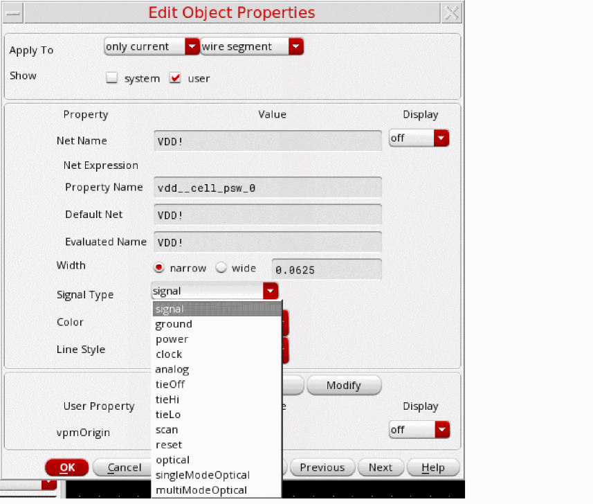

Miscellaneous Settings
Specify the generic settings on the Miscellaneous tab.
-
Delimiter
Used for specific notations, for example, redirect netSets created during the 1801 import flow, automatically generated supply set and power domain names, and so on. -
Switch View List to
schematic symbol: It controls the order of the traversal of the design hierarchy during power intent extraction. -
Stop View List to
symbol: It defines the stop point where the design traversal must be stopped by the extractor during power intent extraction.
switchViewListandstopViewListcan be specified in the Power Manager setup template or defined using the switchViewList and stopViewList environment variables. -
Use Signal Type (
considerSignalType) to ignore or consider thesigTypeattribute of nets for detecting the supply nets during power intent extraction. By default, this option is set toniland the attribute is not considered during name-based registration for detecting supply nets. However, if set totand there is a conflict between thesigTypeattribute and name-based registration, name-based registration takes precedence.-
Setting the signal type to identify the power nets and ground nets
Each net has aSignal Typeattribute that when set topowerorgroundcan be used to identify the net as a power net or a ground net, respectively. The default signal type of a net issignal. During the automatic extraction, Power Manager looks for theconsiderSignalTypeattribute. When set totrue, it creates power domains considering all the nets that have the signal type defined as power or ground.If there is a conflict between the sigType attribute and name-based registration, name-based registration takes precedence.You can set the signal type for pins or nets in your design in one of the following ways:-
Select a pin or net on the schematic and in the Property Editor assistant, update the Signal Type property.
-
Right-click a net and choose Properties to open the
Edit Object Properties
form. Update the Signal Type property in this form.
-
Specify the appropriate signal type while creating a new pin by using the
Create Pin
form. The Signal Type field, which is by default set as
signal, specifies the pin type.For the power pins, you can set the value in this field aspower.
If you use a specific set of names, such as,vdd,vdd!, orVDD, for the power pins in your designs andvss,vss!, orVSS, for the ground pins, it is recommended that you register those names by using the ciRegisterNet API in.cdsinitfile. If you use a registered name for a pin on the Create Pin form and the signal type is set assignal, the default value, the tool automatically sets the signal type of that pin aspowerorgroundrespectively. In that case, you need not specify the signal type explicitly for each new pin or net created in the design. Later, if you do not need to use the registered names, you can set the registration asnil.
The name-based registration in the setup file template for the Power Manager is as follows:;;; Supply Nets
supplyNets (nil
power (nil
names ("vdd" "avdd" "dvdd" "VDD" "AVDD" "DVDD")
regExprs ("[vV][dD][dD]" "[vV][cC][cC]")
)
ground (nil
names ("vss" "avss" "dvss" "VSS" "AVSS" "DVSS")
regExprs ("[vV][sS][sS]" "[gG][nN][dD]" "gnd*")
- Select Load Setup From Environment and Use Setup Changes From Environment to load setup or change the environment setup.
power.
If you use a specific set of names, such as,vdd,vdd!, orVDD, for the power pins in your designs andvss,vss!, orVSS, for the ground pins, it is recommended that you register those names by using the ciRegisterNet API in.cdsinitfile. If you use a registered name for a pin on the Create Pin form and the signal type is set assignal, the default value, the tool automatically sets the signal type of that pin aspowerorgroundrespectively. In that case, you need not specify the signal type explicitly for each new pin or net created in the design. Later, if you do not need to use the registered names, you can set the registration asnil.
The name-based registration in the setup file template for the Power Manager is as follows:;;; Supply Nets
supplyNets (nil
power (nil
names ("vdd" "avdd" "dvdd" "VDD" "AVDD" "DVDD")
regExprs ("[vV][dD][dD]" "[vV][cC][cC]")
)
ground (nil
names ("vss" "avss" "dvss" "VSS" "AVSS" "DVSS")
regExprs ("[vV][sS][sS]" "[gG][nN][dD]" "gnd*")
-
Select a pin or net on the schematic and in the Property Editor assistant, update the Signal Type property.
- Select Load Setup From Environment and Use Setup Changes From Environment to load setup or change the environment setup.
-
Setting the signal type to identify the power nets and ground nets
Related Topics
Registering Name-Based Supply Nets
Return to top